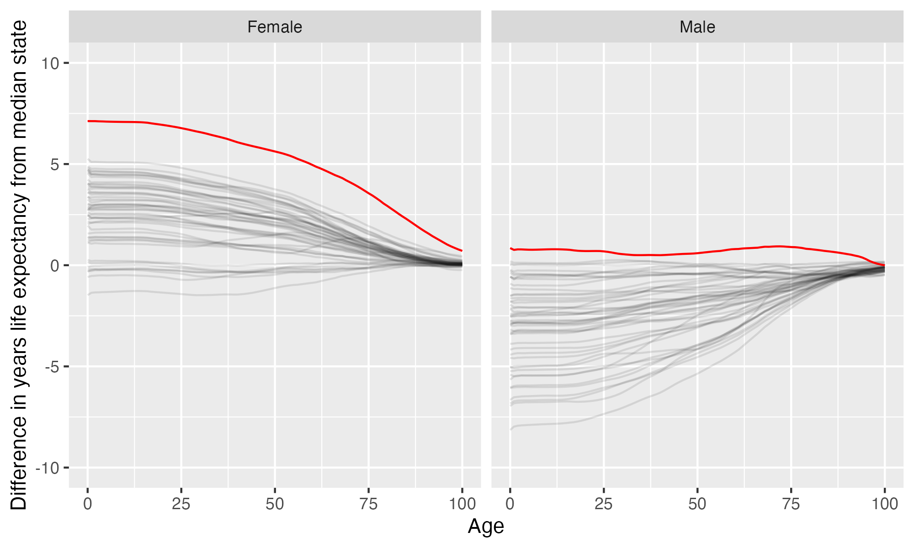

University of Hawaii at Manoa
University of Hawaii at Manoa is located in Honolulu, Hawaii. It is a public, 4-year or above institution.
From Wikipedia: The University of Hawaiʻi at Mānoa (University of Hawaii—Mānoa, UH Mānoa, Hawai’i, or simply UH) is a public land-grant research university in Mānoa, a neighborhood of Honolulu, Hawaii. It is the flagship campus of the University of Hawaiʻi system and houses the main offices of the system. Most of the campus occupies the eastern half of the mouth of Mānoa Valley, with the John A. Burns School of Medicine located adjacent to the Kakaʻako Waterfront Park. U.
Notes
These are items that bear looking into more closely.
This institution’s total assets have tended to decrease over time.
This institution’s full-time undergraduate enrollment has tended to decrease over time.
Overview of institution
Institution kind: Doctoral Universities: Very High Research Activity
Undergrad program: Balanced arts & sciences/professions, high graduate coexistence
Graduate program: Research Doctoral: Comprehensive programs, with medical/veterinary school
Enrollment profile: High undergraduate (see more details below)
Average net price for undergrads on financial aid: $14,825 (1.1 times the equivalent cost of Harvard).
Average net price for families with $30K-48K income: $9,984 (This is $8,588 more expensive than what Harvard costs for equivalent students).
Actual price for your family: Go here to see what your family may be asked to pay. It can be MUCH lower than the average price but also higher for some.
Size and setting: Four-year, large, primarily residential
In state percentage: 52.4% of first year students come from Hawaii
In US percentage: 96.7% of first year students come from the US (note that 0.3% have no residence reported)
Graduation rate (within 6 years) for students seeking a Bachelors: 58.9% (this is what is usually reported as “graduation rate”)
Graduation rate (within 4 years) for students seeking a Bachelors: 36.7%
Student to tenure-stream faculty ratio: 11.7 (undergrads to tenure-stream faculty) [Tenure explained]
Student to faculty ratio: 9.5 (undergrads to all faculty)
Degrees offered: Certificate of less than 1 year, Certificate of at least 12 weeks but less than 1 year, Certificate of at least 1 year but less than 2 years, Bachelor’s degree, Postbaccalaureate certificate, Master’s degree, Doctor’s degree: research scholarship, Doctor’s degree: professional practice
Schedule: Semester
Institution provides on campus housing: Yes
Dorm capacity: There are enough dorm beds for 3272 students
Freshmen required to live on campus: No
Meal plan: Yes, number of meals per week can vary
Covid vaccination requirement for students: At some point during the pandemic (this may have changed), this institution required students to be vaccinated against covid (based on info from here)
Covid vaccination requirement for faculty/staff: At some point during the pandemic (this may have changed), this institution required faculty and/or staff to be vaccinated against covid (based on info from here)
Advanced placement (AP) credits used: Yes
Disabilities: 7 percent of undergrads are registered as having disabilities.
Overview of location
- Abortion in this state: Protective (based on https://states.guttmacher.org/policies/ as of May 10, 2023)
- Gun law stringency: A- (higher grade = more stringent)
- State rep support for contraception: 100% of US reps from this state voted in favor of legal protections for contraception.
- State rep support for recognizing same-sex and interracial marriage: 100% of US reps from this state voted in favor of requiring states to recognize same-sex and interracial marriages performed in other states
- Anti-trans legislative risk: Safest (based on Erin Reed’s work, as of May 19, 2023)
- Ecological region: Hawaii tropical dry forests
- Biome: Tropical & Subtropical Dry Broadleaf Forests
- Distance to mountains: 0 miles to Koʻolau Range
- Climate: See overview at WeatherSpark
Similar institutions
This is using information about school size, acceptance rate, yield rate, graduation rate, cost, athletic conference, and similar metrics, but it can miss important axes of similarity (for example, culinary versus hair styling schools).
Map
Enrollment
| University of Hawaii at Manoa | Change over ≤ 11 years | Trend | Big West Conference | Doctoral Universities: Very High Research Activity | |
|---|---|---|---|---|---|
| Undergrads (full time) | 11,279 (2021) |

|
↓ -129 per year |
||
| Undergrads (part time) | 2,841 (2021) |

|
|||
| Grad students (full time) | 2,419 (2021) |

|
↓ -57 per year |
||
| Grad students (part time) | 2,559 (2021) |

|
↓ -58 per year |
||
| Admission rate (undergrads) | 70% (2021) |

|
|||
| Yield rate (percent of applicants offered undergraduate admission who accept) | 21% (2021) |

|
✪✪✪✪✪ Better (higher) than 82% |
✪✪ Better (higher) than 28% |
|
| Graduation rate (bachelors in 6 years) | 59% (2021) |

|
✪ Better (higher) than 18% |
✪ Better (higher) than 11% |
Student financing
At many universities, almost no students pay the listed tuition and fees (“sticker price”): instead, their financial aid package lowers this dramatically, but how much students pay can vary substantially based on family income and other factors. The tuition below is the average across many students receiving aid: your family may be asked to pay less or more than this.
| University of Hawaii at Manoa | Change over ≤ 11 years | Trend | Big West Conference | Doctoral Universities: Very High Research Activity | |
|---|---|---|---|---|---|
| Average net price (for students awarded aid) | $14,825 (2020) |

|
↑ $508 per year |
✪✪✪ Better (lower) than 45% |
✪✪✪✪ Better (lower) than 72% |
| Undergrads getting federal aid | 36% (2021) |

|
✪ Better (higher) than 9% |
✪✪✪ Better (higher) than 55% |
|
| Undergrads getting any aid | 79% (2021) |

|
✪✪✪ Better (higher) than 55% |
✪✪✪ Better (higher) than 42% |
|
| Undergrads getting Pell grants | 23% (2021) |

|
✪ Better (higher) than 9% |
✪✪✪✪ Better (higher) than 60% |
Teaching
| University of Hawaii at Manoa | Change over ≤ 11 years | Trend | Big West Conference | Doctoral Universities: Very High Research Activity | |
|---|---|---|---|---|---|
| Undergrads per tenure track instructor (lower is better) | 12 (2020) |

|
✪✪✪✪✪ Better (lower) than 100% |
✪✪✪✪✪ Better (lower) than 81% |
|
| Undergrads per instructor (lower is better) | 9.5 (2020) |

|
✪✪✪✪✪ Better (lower) than 91% |
✪✪✪✪ Better (lower) than 66% |
|
| Total instructors | 1,131 (2020) |

|
↓ -20 per year |
||
| Tenure track instructors | 917 (2020) |

|
↓ -15 per year |
||
| Non-tenure track instructors | 214 (2020) |

|
↓ -5.5 per year |
Student details
| University of Hawaii at Manoa | Change over ≤ 11 years | Trend | |
|---|---|---|---|
| Dorm capacity | 3,272 (2021) |

|
↓ -58 per year |
| Percent of undergrads with registered disabilities (≤3 is rounded up to 3) | 7% (2021) |

|
Institution finances
| University of Hawaii at Manoa | Change over ≤ 11 years | Trend | Big West Conference | Doctoral Universities: Very High Research Activity | |
|---|---|---|---|---|---|
| Revenue from tution and fees | 18% (2021) |

|
✪✪✪✪ Better (lower) than 64% |
✪✪✪✪ Better (lower) than 64% |
|
| Revenue minus expenses | $4.2 M (2021) |

|
✪✪ Better (higher) than 33% |
✪ Better (higher) than 8% |
|
| Revenue | $1.0 B (2021) |

|
↑ $16 M per year |
||
| Expenses | $998 M (2021) |

|
↑ $14 M per year |
||
| Assets | $1.0 B (2021) |

|
↓ -$39 M per year |
✪✪✪✪ Better (higher) than 67% |
✪ Better (higher) than 10% |
Graduation rates
Graduation rates for bachelor’s degrees within 150% of normal time (6 years for a 4-year degree). Note that this uses US federal demographic data: it only has two genders and a specified set of ethnicities and races. For groups with small numbers, the graduation rate may be highly variable year to year (do all three people in this group graduate this year or just two of three, for example).
| University of Hawaii at Manoa | Change over ≤ 11 years | Big West Conference | Doctoral Universities: Very High Research Activity | |
|---|---|---|---|---|
| Total | 59% (2021) |

|
✪ Better (higher) than 18% |
✪ Better (higher) than 11% |
| Men | 57% (2021) |

|
✪ Better (higher) than 18% |
✪ Better (higher) than 14% |
| Women | 60% (2021) |

|
✪ Better (higher) than 18% |
✪ Better (higher) than 10% |
| American Indian or Alaska Native men | 0% (2021) |

|
✪ Better (higher) than 0% |
✪ Better (higher) than 8% |
| American Indian or Alaska Native women | 33% (2021) |

|
✪ Better (higher) than 0% |
✪ Better (higher) than 14% |
| Asian men | 71% (2021) |

|
✪✪ Better (higher) than 27% |
✪✪ Better (higher) than 31% |
| Asian women | 77% (2021) |

|
✪ Better (higher) than 18% |
✪✪ Better (higher) than 24% |
| Black or African American men | 30% (2021) |

|
✪ Better (higher) than 0% |
✪ Better (higher) than 4% |
| Black or African American women | 36% (2021) |

|
✪ Better (higher) than 0% |
✪ Better (higher) than 3% |
| Hispanic men | 38% (2021) |

|
✪ Better (higher) than 0% |
✪ Better (higher) than 3% |
| Hispanic women | 50% (2021) |

|
✪ Better (higher) than 0% |
✪ Better (higher) than 5% |
| Native Hawaiian or other Pacific Islander men | 40% (2021) |

|
✪ Better (higher) than 20% |
✪✪ Better (higher) than 23% |
| Native Hawaiian or other Pacific Islander women | 39% (2021) |

|
✪✪ Better (higher) than 27% |
✪✪ Better (higher) than 21% |
| White men | 41% (2021) |

|
✪ Better (higher) than 0% |
✪ Better (higher) than 1% |
| White women | 44% (2021) |

|
✪ Better (higher) than 0% |
✪ Better (higher) than 1% |
| Two or more races men | 56% (2021) |

|
✪ Better (higher) than 9% |
✪✪ Better (higher) than 22% |
| Two or more races women | 58% (2021) |

|
✪ Better (higher) than 18% |
✪ Better (higher) than 17% |
| Nonresident alien men | 36% (2021) |

|
✪ Better (higher) than 0% |
✪ Better (higher) than 1% |
| Nonresident alien women | 70% (2021) |

|
✪✪ Better (higher) than 27% |
✪✪ Better (higher) than 22% |
Freshmen demographics
Demographic data for first time degree-seeking students. Note that this uses US federal demographic data: it only has two genders and a specified set of ethnicities and races.
| University of Hawaii at Manoa | Change over ≤ 11 years | |
|---|---|---|
| Men (percent freshmen) | 35% (2021) |

|
| Women (percent freshmen) | 65% (2021) |

|
| American Indian or Alaska Native men (percent freshmen) | 0.1% (2021) |

|
| American Indian or Alaska Native women (percent freshmen) | 0.3% (2021) |

|
| Asian men (percent freshmen) | 13% (2021) |

|
| Asian women (percent freshmen) | 19% (2021) |

|
| Black or African American men (percent freshmen) | 0.7% (2021) |

|
| Black or African American women (percent freshmen) | 0.9% (2021) |

|
| Hispanic men (percent freshmen) | 3.9% (2021) |

|
| Hispanic women (percent freshmen) | 10% (2021) |

|
| Native Hawaiian or Other Pacific Islander men (percent freshmen) | 0.4% (2021) |

|
| Native Hawaiian or Other Pacific Islander women (percent freshmen) | 1.1% (2021) |

|
| White men (percent freshmen) | 6.0% (2021) |

|
| White women (percent freshmen) | 17% (2021) |

|
| Two or more races men (percent freshmen) | 9.6% (2021) |

|
| Two or more races women (percent freshmen) | 14% (2021) |

|
| Race ethnicity unknown men (percent freshmen) | 0.4% (2021) |

|
| Race ethnicity unknown women (percent freshmen) | 0.4% (2021) |

|
| Nonresident alien men (percent freshmen) | 0.9% (2021) |

|
| Nonresident alien women (percent freshmen) | 2.2% (2021) |

|
Freshmen geography
| University of Hawaii at Manoa | Change over ≤ 11 years | |
|---|---|---|
| In state | 52% (2021) |

|
| US | 97% (2021) |

|
| Not reported | 0.3% (2021) |

|
Tenure track faculty
Tenure track faculty are those who are eligible for tenure. This includes both pre-tenure and tenured faculty. Once faculty get tenure, they are (generally) protected from being fired for intellectual reasons, helping to ensure their freedom in teaching and research. They can still lose their positions for misconduct, financial problems, not fulfilling their duties, or other reasons. Note that this chart uses US federal demographic data: it only has two genders and a specified set of ethnicities and races.
| University of Hawaii at Manoa | Change over ≤ 11 years | Trend | |
|---|---|---|---|
| Total (tenure-track count) | 917 (2020) |

|
↓ -15 per year |
| Women (tenure-track count) | 397 (2020) |

|
↓ -2.1 per year |
| Men (tenure-track count) | 520 (2020) |

|
↓ -13 per year |
| American Indian or Alaska Native (tenure-track count) | 1 (2020) |

|
↓ -0.2 per year |
| Asian (tenure-track count) | 263 (2020) |

|
|
| Black or African American (tenure-track count) | 9 (2020) |

|
|
| Hispanic or Latino (tenure-track count) | 12 (2020) |

|
↓ -0.8 per year |
| Native Hawaiian or other Pacific Islander (tenure-track count) | 55 (2020) |

|
|
| White (tenure-track count) | 500 (2020) |

|
↓ -16 per year |
| Two or more races (tenure-track count) | 28 (2020) |

|
↑ 2.1 per year |
| Nonresident alien (tenure-track count) | 49 (2020) |

|
↓ -1.9 per year |
Non-tenure track faculty
Non-tenure track faculty are not eligible for tenure. Some are hired one semester at a time, some have multi-year contracts. They typically have a higher teaching load than tenure track faculty, leaving less time for research or other creative endeavors. They are also easier to fire than tenured faculty. Sometimes they are external experts (a noted musician, a former senator) who are hired to teach some classes without the expected permanence of a tenure-track position. Note that this chart uses US federal demographic data: it only has two genders and a specified set of ethnicities and races.
| University of Hawaii at Manoa | Change over ≤ 11 years | Trend | |
|---|---|---|---|
| Total (non-tenure-track count) | 214 (2020) |

|
↓ -5.5 per year |
| Women (non-tenure-track count) | 139 (2020) |

|
↓ -3.6 per year |
| Men (non-tenure-track count) | 75 (2020) |

|
↓ -1.9 per year |
| American Indian or Alaska Native (non-tenure-track count) | 0 (2020) |

|
|
| Asian (non-tenure-track count) | 73 (2020) |

|
|
| Black or African American (non-tenure-track count) | 3 (2020) |

|
|
| Hispanic or Latino (non-tenure-track count) | 11 (2020) |

|
|
| Native Hawaiian or other Pacific Islander (non-tenure-track count) | 23 (2020) |

|
|
| White (non-tenure-track count) | 78 (2020) |

|
↓ -4.8 per year |
| Two or more races (non-tenure-track count) | 16 (2020) |

|
↑ 1.3 per year |
| Nonresident alien (non-tenure-track count) | 10 (2020) |

|
Library facilities
| University of Hawaii at Manoa | Change over ≤ 11 years | Trend | Big West Conference | Doctoral Universities: Very High Research Activity | |
|---|---|---|---|---|---|
| Number of physical books | 2.2 M (2021) |

|
↓ -171,603 per year |
✪✪✪✪ Better (higher) than 73% |
✪✪✪✪ Better (higher) than 66% |
| Physical library circulations per students and faculty | 3.8 (2020) |

|
↓ -1.2 per year |
✪✪✪✪✪ Better (higher) than 100% |
✪✪✪✪✪ Better (higher) than 83% |
| Digital library circulations per students and faculty | 62 (2020) |

|
✪✪✪✪✪ Better (higher) than 82% |
✪✪✪ Better (higher) than 55% |
Life expectancy
This hopefully will not be relevant for potential students, but it may be for people moving to an area longer term, such as faculty and staff choosing where to live. This uses information from US National Vital Statistics Reports for 2020; like much federal data, it assumes people are male or female. For age difference from median, it is from the median state, averaging across all genders (one consequence of this is that the difference from the median life expectancy is almost always negative for men).
- Life expectancy at birth: 83.8 years women (7.1 years over the median), 77.6 years men (0.8 years over the median)
- Remaining life expectancy at age 18: 66.4 years women (7 years over the median), 60.1 years men (0.7 years over the median)
- Remaining life expectancy at age 30: 54.7 years women (6.6 years over the median), 48.7 years men (0.5 years over the median)
- Remaining life expectancy at age 45: 40.4 years women (5.8 years over the median), 35.1 years men (0.5 years over the median)
- Remaining life expectancy at age 60: 26.9 years women (5 years over the median), 22.7 years men (0.8 years over the median)
We can also plot the extra / fewer years of life expected for this state (red) compared to other states (dark gray) at each age. Again, this is normalized for the median state.

SAT scores
| University of Hawaii at Manoa | Change over ≤ 11 years | Trend | |
|---|---|---|---|
| Applicants submitting SAT | 3% (2021) |

|
|
| SAT Evidence Based Reading and Writing 25th percentile score | 550 (2021) |

|
↑ 5.0 per year |
| SAT Evidence Based Reading and Writing 75th percentile score | 660 (2021) |

|
↑ 10.0 per year |
| SAT Math 25th percentile score | 530 (2021) |

|
↑ 6.3 per year |
| SAT Math 75th percentile score | 630 (2021) |

|
↑ 4.5 per year |
ACT scores
| University of Hawaii at Manoa | Change over ≤ 11 years | Trend | |
|---|---|---|---|
| Applicants submitting ACT | 6% (2021) |

|
|
| ACT Composite 25th percentile score | 20 (2021) |

|
|
| ACT Composite 75th percentile score | 27 (2021) |

|
↑ 0.3 per year |
| ACT English 25th percentile score | 19 (2021) |

|
|
| ACT English 75th percentile score | 25 (2021) |

|
|
| ACT Math 25th percentile score | 18 (2021) |

|
↓ -0.3 per year |
| ACT Math 75th percentile score | 26 (2021) |

|